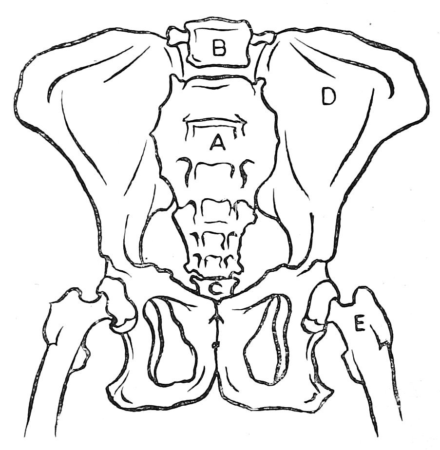
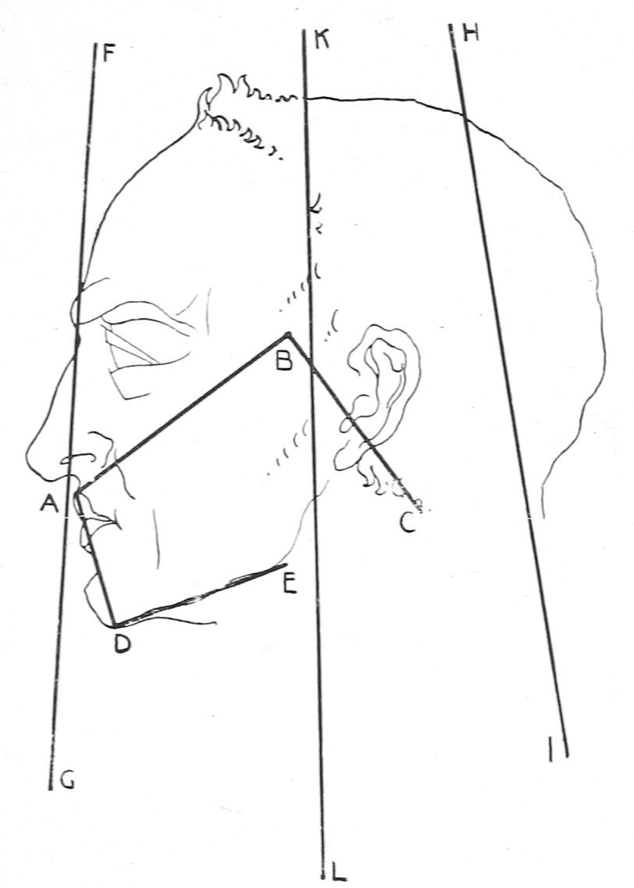
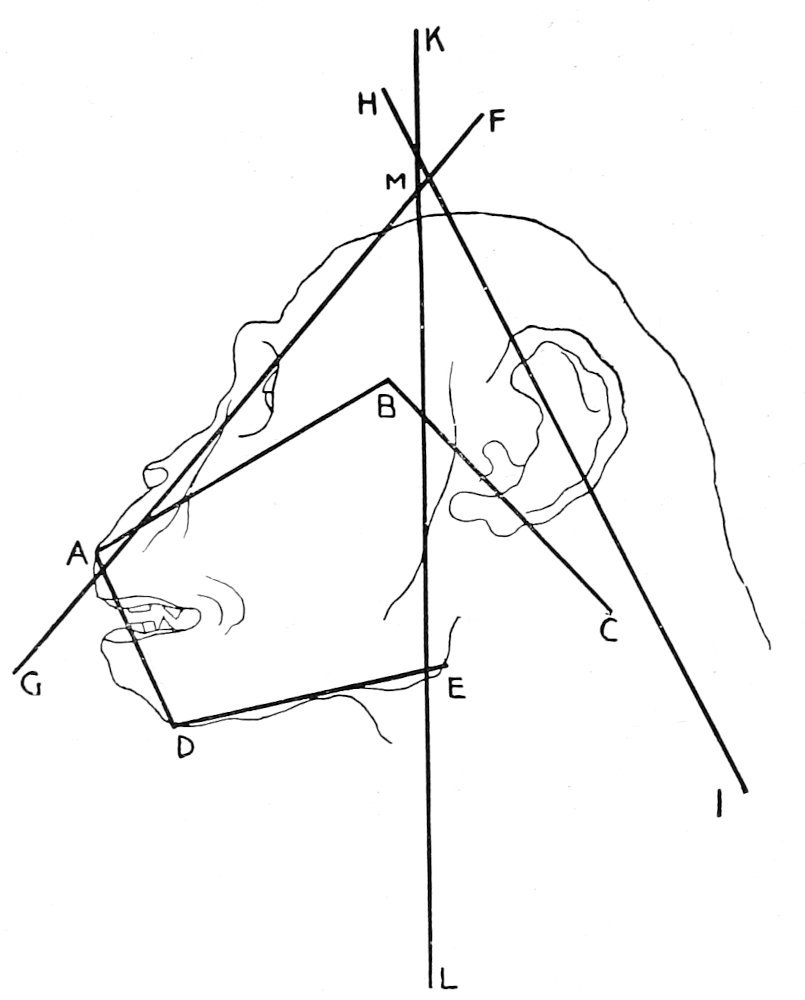
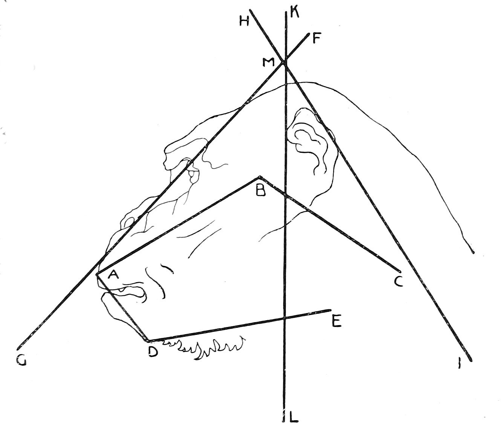
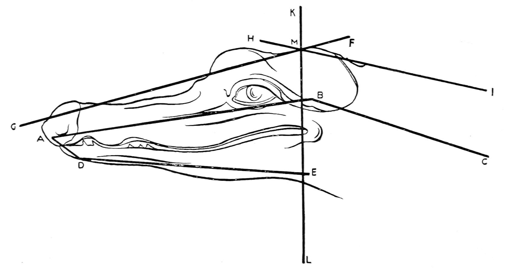

Monkeys, Apes, and Men—Comparative Anatomy—Skulls—The Law of Cranial Projection
From time immemorial monkeys have been subjects of interest to the old and to the young. The wise and the simple are alike impressed with their human looks and manners. There are no other creatures that so charm and fascinate the beholder as do these little effigies of the human race. With equal delight, patriarchs and children watch their actions and compare them to those of human beings. Until recent years monkeys have served to amuse rather than to instruct the masses. But now that the search-light of science is being thrown into every nook and crevice of nature, human interest in them is greatly increased and the savants of all civilized lands are wrestling with the problem of their possible relationship to mankind. With the desire of learning as much as possible concerning their habits, faculties, and mental resources, they are being studied from every point of view, and each characteristic is seriously compared in detail to the corresponding one in man. Concurrent with this desire, we shall note the chief points of resemblance and of difference between them.
In order to appreciate more fully the value of the lessons to be drawn from the contents of this volume we must know the relative planes that men and monkeys occupy in the scale of nature. Within the limits of this work, however, we can only compare them in a general way. Since monkeys differ so widely among themselves, it is evident that all of them cannot in the same degree resemble man; and as the degree of interest in them is approximately measured by their likeness or unlikeness to man, it is apparent that all cannot be of equal interest as subjects of comparative study. But since each forms an integral part of one great scale, each one is equally important in tracing out the continuity of the order to which all belong.
The vast family of simians has perhaps the widest range of types of any single family of animals. Beginning with the great apes, which in size, form, and structure so closely resemble man, we descend the scale until it ends in the lemurs, which are almost on the level of rodents. The descent is so gradual that it is difficult to draw a line of demarcation at any point between the two extremes. There is now, however, an effort being made to separate this family into smaller and more distinct groups; but the lines between them are not sharply drawn, and the literature of the past has a tendency to retard the effort. But we shall not here assume to discuss the problems with which zoölogy may in the future have to contend; we shall accept the current system of classification and proceed along that line.
In the language of the masses all the varied types that belong to the simian family are known as monkeys. This term is so broad in its application as to include many forms which are not to be considered in this work, and many of them should be known under other names. Some of these resemble man more than they resemble each other. By the word monkey, we mean to refer only to those of the simian tribe that have long tails and short faces, while the word baboon refers only to the dog-like forms having tails of medium length and long projecting faces. The term ape will be applied only to those having no tails at all. While all of these animals are called simians, they are not all monkeys.
The simian family is divided into two great classes, known as old world monkeys and new world monkeys. The chief point of distinction is in the structure of the nose. All of the monkeys belonging to the old world stock have long, straight noses with vertical nostrils, separated by a narrow thin wall, or septum, and from this fact they are technically known as catarrhini. The new world stock have short, flat noses with oblique nostrils set wide apart, and on this account they are known as platarrhini. There are many other marks that distinguish genera and species, but these are the two grand divisions of the simian race. We shall not here attempt to classify the many genera and species of either of these divisions. But we shall point out some of the most salient anatomical features of men and apes, and then those of monkeys.
Among the simians, erroneously called monkeys, are the four kinds that constitute the anthropoid, or manlike, group of apes. In certain respects they differ from each other as much as any one of them differs from man. The four apes here alluded to and named in the order of their physical resemblance to man are: the gorilla, the chimpanzee, the orang, and the gibbon; but if placed in the order of their mental and social characteristics they stand as follows: the chimpanzee, which is next to man, the gorilla, the gibbon, and, last, the orang. It is possible, however, that it may yet be found that the gibbon is intellectually the highest of this group.
As the skeleton is the framework of the physical structure, it will serve for the basis upon which to build up the comparisons; and as, on the whole, the chimpanzee is the nearest approach to man, we select and use him as the standard of comparison. The skeleton of the chimpanzee may be said to be an exact duplicate of that of man. The assertion, however, should be qualified by a few facts of minor importance; but since they are facts, they should not be ignored. The general plan, purpose, and structure of the skeletons of man and chimpanzee are the same. There is no part of the one which is not duplicated in the other, and there is no function discharged by any part of the one that is not discharged by a like part of the other. The chief point in which they differ is in the structure of one bone. To this we shall pay special attention.
Near the base of the spinal column is a large compound bone, known as the sacrum. It is a constituent part of the column, but in its singular form and structure it differs slightly from the corresponding bone in man. The general outline of this bone has the form of an isosceles triangle. It fits in between the two large bones that spread out towards the hips and articulate with the thigh bones. In man, about halfway between the center and the edge along each side is a row of four nearly round holes. Across the surface of the bone is a dim, transverse line, or seam, between each pair of holes, from which it is seen that five smaller sections of the spinal column have anchylosed, or grown together, to form the sacrum. The holes coincide with the open spaces between the transverse processes, or lateral projections, of the other bones of the spinal column above this. In the chimpanzee this bone has the same general form as in man, except that instead of four holes in each row it has five. They are connected by transverse seams the same as in man, thus indicating that six of the vertebræ, instead of five, are united. In compensation for this, the ape has one vertebra less in the portion of the spinal column just above, which is called the lumbar. In man there are five free lumbar vertebræ and five united sections of the sacrum, while in the ape there are only four free lumbar vertebræ and six united sections forming the sacrum. But regarding each section of the sacrum as a separate bone and counting the whole number of vertebræ in the spinal column there are found to be exactly the same number in each.

Pelvis of the Chimpanzee
A, sacrum; B, fourth lumbar vertebra; C, coccyx; D, ilium or hip bone; E, femur or thigh bone.
Some writers have put great stress upon the difference in the structure of this bone, and have pointed out as impossible a common origin for man and ape; but one fact remains to be explained, and that is, that while these appear to be fixed and constant characteristics of man and ape there are many exceptions known in human anatomy. In the splendid collection of human spinal columns in the museum of the Harvard Medical School are no less than eighteen specimens of the human sacrum having six united segments; and I have found in the collections of various museums a total of more than thirty others. These facts show that this characteristic is not confined to the ape. It is true that in some of these abnormal specimens there remain five lumbar vertebræ. This seems to indicate that this portion of the spinal column is the most susceptible to variation. I have never seen an instance, however, of variation in the sacrum of the chimpanzee. In this respect he appears to be, in his structural type, more constant than man.
One reason why this bone is so formed in the ape is this. At that point the greatest weight and strain are laid upon the spinal column, and the crouching habit of the animal has a tendency to depress the lowest lumbar vertebra between the points of the hip bones and thus arrest its lateral movement. Since the flexure of this part is lessened, the cartilage that lies between the two segments becomes rigid and then ossifies. The erect posture of man allows more play in the region of the loins, and hence this motion prevents the two bones from uniting.
Another bone that may be said to vary somewhat is the sternum, or breastbone. It is the thin, soft bone to which the ribs are joined in the front of the body. In the young of both man and ape it is a mere cartilage. This slowly ossifies as the animal matures. The process appears to begin at five different segments, the first nucleus appearing near the top. This bone never becomes quite perfect either in man or ape. It always remains somewhat porous, and even in advanced age the outline of the lower portion is not defined by a smooth, sharp line, but is irregular in contour and merges into the cartilages that unite the ribs to it.
In an adult human being this bone is usually found to be in two segments, while in the ape it varies. In some specimens it is the same as in man. In others it is sometimes found to be in three, four, or even five sections. But the sternum in each is regarded as one bone, and is developed from one continuous cartilage. The separate parts are not considered distinct bones. The reason, no doubt, that this bone remains in separate sections in the ape is due to the stooping habit of the animal, by which the part is constantly flexed and alternately straightened, and therefore discharges its function better than it otherwise could.
With these trifling exceptions the skeletons of man and ape may be truly said to be exact counterparts of each other, having the same number of bones, of the same general model, arranged in the same order, articulated in the same manner, and performing the same functions. In other words, the corresponding bone in each is the same in design and purpose. The frame of the ape is, as a rule, more massive in its proportions than that of man; but while this is true of certain kinds of apes, the reverse is true of others.
In man the sacrum is more curved in the plane of the hips than it is in the ape, while the bones of the digits in man are less curved. The arms of man are shorter than the legs, while in the ape the comparative length of these features is reversed. In the cranial types it is readily seen that the skull of man is more spherical and the face almost or quite vertical. The skull of the ape is elongated and the chin projects. Thus his face is at an angle from a vertical line. These facts deserve more notice than the mere mention.

Diagram No. 1
In the scheme of nature there appears to be a fixed law of cranial projection. The cranio-facial angle in man, ABC (as shown in diagram No. 1), is a right angle, and the gnathic angle ADE is approximately the same. The line FG represents the axis of the facial plane, and the line HI is the cervical axis. Reckoned from the vertical line KL it will be seen that the angles formed by the facial axis FG and the cervical axis HI are about the same on opposite sides of the vertical line KL. It will be observed that these lines and angles are those of man whose posture is upright. In diagram No. 2 it will be seen that both the facial axis FG and the cervical axis HI form a greater angle from the vertical line than in man. It will also be seen that the cranio-facial angle ABC is increased by about one-half of the angle of the facial axis GML. The gnathic angle ADE is increased in about the same degree. These are the lines and angles of the anthropoid apes.

Diagram No. 2

Diagram No. 3
Diagram No. 3 represents the lines and angles of monkeys, in which the angles widened in a degree measured by the tendency of the animal to assume a horizontal posture.
In diagram No. 4 we have the lines and angles of reptiles. In these it will be seen that the facial axis FG and the cervical axis HI are almost horizontal. The cranio-facial and gnathic angles have been correspondingly widened.

Diagram No. 4
Man standing erect has the greatest range of vocal powers of any animal. He also has the greatest control over them. In vocal range the apes come next in order. As we descend the scale from man through apes, monkeys, lemurs, and lemuroids, ultimately ending in the reptilian forms, we find the vocal powers restricted in scope and degraded in quality, until in the lowest reptiles they are lost in a mere hiss.
Concurrent with the variations described, the longitudinal, vertical, and transverse axes of the brain also change their proportion in a like degree. The angles formed by the plane of the vocal cords with the axis of the larynx undergo a corresponding change. A just deduction from these facts is, that the gnathic index ADE is a true vocal index.
This rough outline of the law of cranial projection does not purport to be a full treatment of the many lines and angles correlated to the powers of speech, but the suggestions may lead the craniologist into new fields of thought.